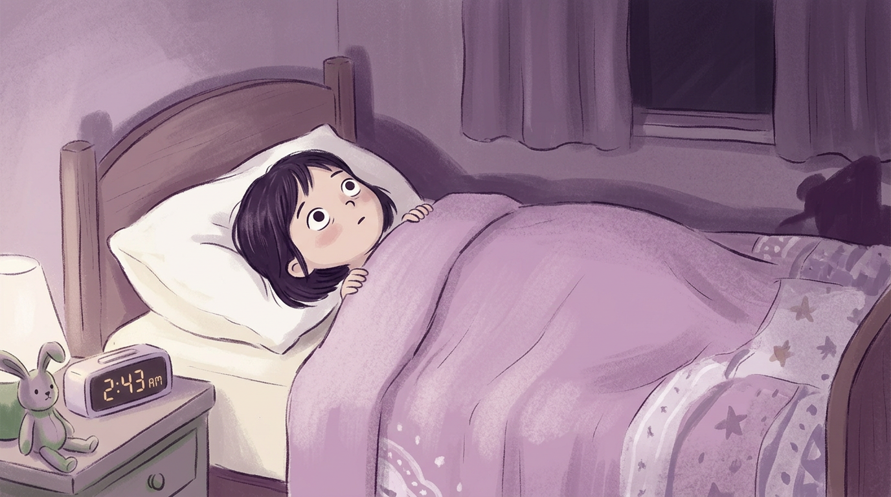
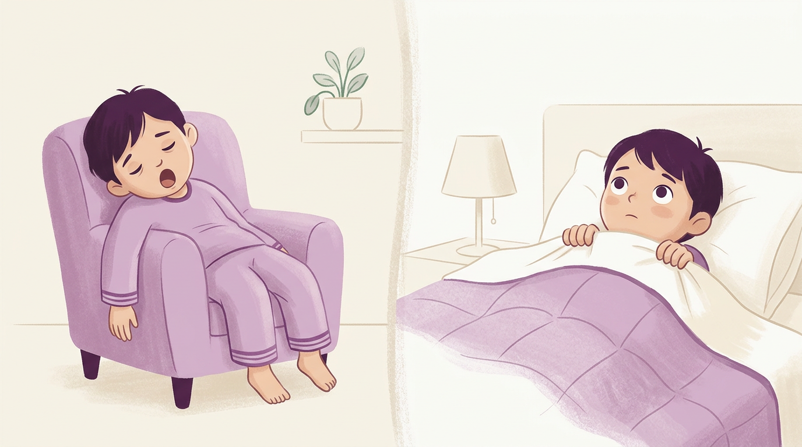
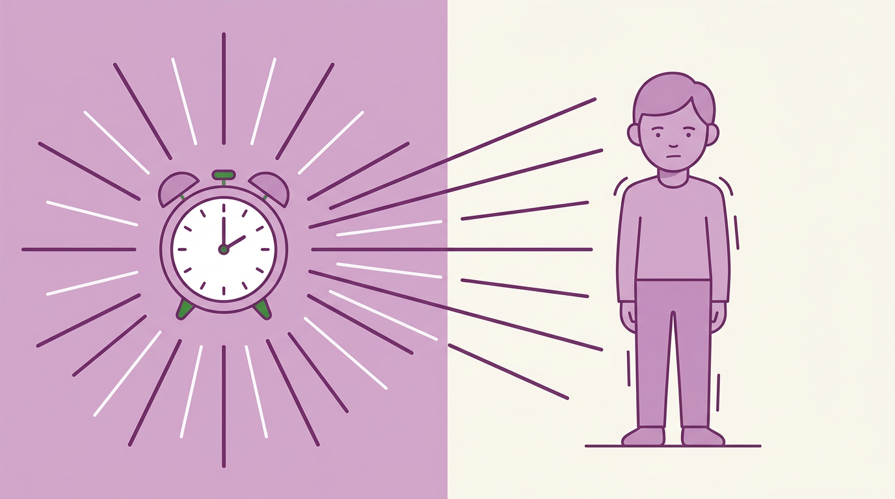
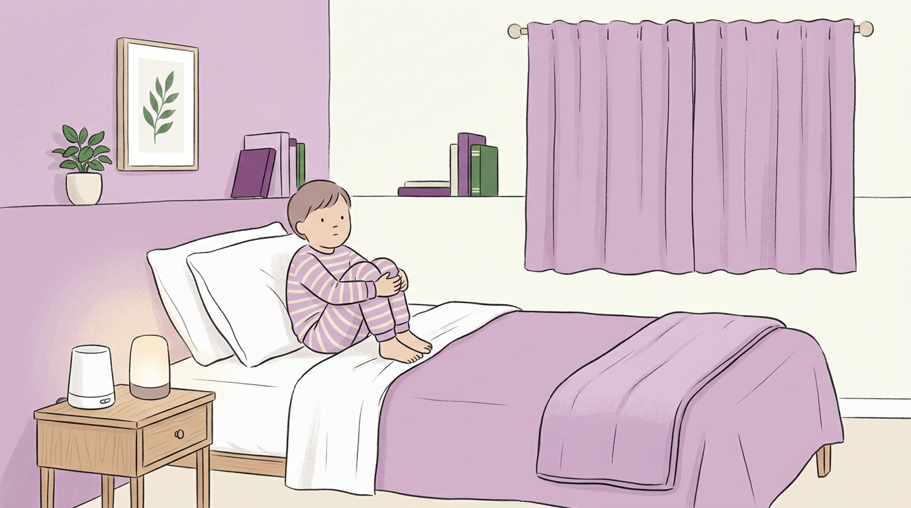
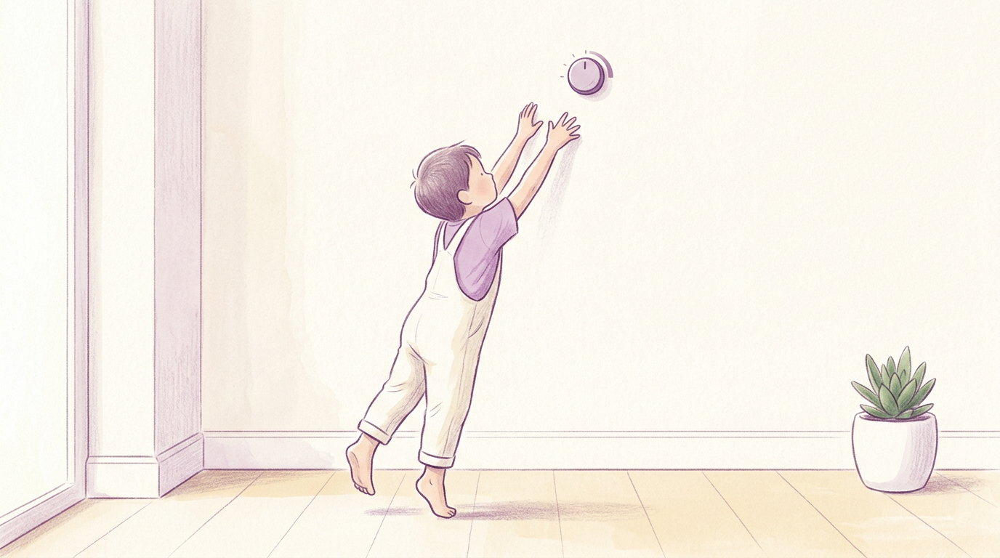
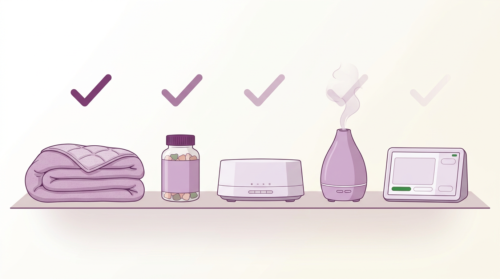
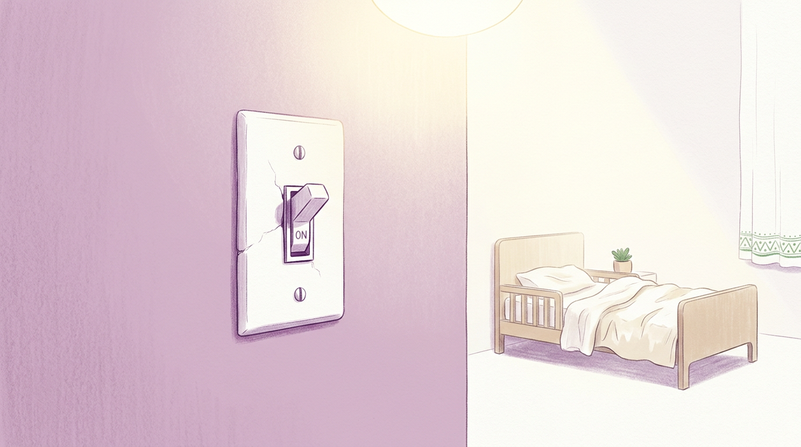

5 Reasons Your Kid Is Exhausted but Wide Awake at Bedtime

Your kid isn't awake because they're not tired enough. They're awake because they're too tired.
Tomorrow night the yawning starts before the second page.
Eyes close on their own — not because something kicked in, but because their body finally figured out how to slow down.
No getting back up at 10. No little feet in the hallway. No "I can't sleep."
Morning without a meltdown. Shoes found. No text from the teacher.
Not by giving more melatonin. Not by adding one more thing to the routine.
And not by trying harder at everything you've already tried.
Here are 5 reasons your exhausted kid is still wide awake at bedtime — and what their body actually needs to slow down.
Reason #1: Exhaustion Is Supposed to Mean Sleep — for Some Kids It Means the Opposite

It's 9pm. They've been going since 6:30 this morning.
Gym class. Recess. Two hours at the park after school.
Their eyes are heavy. Their body is done.
And they're wider awake than they were at noon.
This makes no sense — until you see what happens inside a child's body when it gets too tired.
When a kid hits a certain level of tired, something is supposed to happen. The brain is supposed to get the message: slow down, rest, power off.
But for some kids, the message gets scrambled.
Instead of "time to rest," the brain hears "something is wrong — stay alert."
The tiredness itself sets off the alarm.
Their body pumps out stress chemicals — the same ones that jolt you awake when a car alarm goes off outside your window at 3am.
Not because they're worried. Not because they're scared. Because their body read "exhausted" as "danger."
Exhaustion is supposed to be a sleep signal. But for some kids, it's an alarm signal.
Same feeling. Opposite result.
It's like a lamp with no dimmer.
The only options are full brightness or off. Nothing in between.
So when it's time to go from "on" to "off," the body doesn't know how to get there slowly. It just stays on.
You can see it in the bed. Their body is still. Their eyes are wide open. They're not fighting you. They're not being difficult.
Their brain is stuck at full brightness and there's no way to turn it down.
The weighted blanket doesn't help. The dark room doesn't help. The routine doesn't help.
Those things change the room. They don't change what's going on inside.
They're not fighting sleep. Their body is stuck in the wrong gear. The tiredness you see isn't a sign they need more activity. It's a sign their body needs help getting from "on" to "off."
But it gets worse. Because the thing most parents reach for next doesn't turn the light down — it just flips a different switch.
Reason #2: Melatonin Tells the Body When to Sleep — It Can't Teach It How

She started with half a milligram.
It worked. For about three weeks.
Then it stopped.
She went up to one milligram. Then two. Then three.
Now she's standing in the kitchen at 11pm, holding a gummy bottle, wondering if she should try five.
Here's what's really going on.
Melatonin is a hormone. Your child's body already makes it every night when the sun goes down.
When you give them a gummy, you're adding more of something their body already has.
It's not turning the dimmer down. It's flipping a switch.
"Feel tired. Now."
And for a few weeks, the switch works. The body gets the message and shuts down.
But the body catches on. It notices the extra hormone showing up from outside. So it starts making less of its own.
That's why the dose keeps climbing. She's not imagining it. The pattern is real.
Half a milligram worked. Then one worked. Then three. Then nothing.
The body adjusted. It stopped making what the gummy was doing for it.
A big study in 2024 — 1,020 people — tested this. Melatonin helped people fall asleep. But it didn't change what happened after.
It didn't help them stay asleep. It didn't make their sleep deeper or better. And it didn't touch the real problem — a body that can't slow down on its own.
Melatonin tells the body when to sleep. It can't teach the body how.
For kids lying in bed with wide eyes at 10pm — they already know it's nighttime.
They don't need a signal. They need help slowing down. Gradually. Not with a flip.
And then there's the label problem.
In 2023, researchers tested 25 melatonin gummy brands from store shelves. 22 of them — 88% — had a different amount than what the label said.
Some had three times the listed dose. One had no melatonin at all.
She doesn't even know how much she's giving.
You weren't wrong to try melatonin. It does what it says — it sends a sleep signal. But a sleep signal can't fix a body that doesn't know how to slow down. And the longer the gummy does the job the body is supposed to do, the less the body does it on its own.
But the melatonin problem goes deeper than the dose. Because when most parents see it's not working, they do the one thing that makes everything harder.
Reason #3: A Perfect Bedtime Fixes the Bedroom — Not the Body

Teeth brushed. Book read. Lights dimmed. Sound machine on. Weighted blanket tucked.
Every single night. Same order. Same time. Same voice.
She followed the sleep consultant's plan. She read the books. She cut screens at 5pm. She bought the blackout curtains, the seamless pajamas, the lavender diffuser.
She built a bedroom that could be on the cover of a parenting magazine.
And every single night, the door creaks open 45 minutes later. Little feet on the hardwood. "I can't sleep."
The routine isn't broken. It never was.
Every item on that list does exactly what it should. Dark room cuts down on things that keep the brain busy. White noise blocks sounds that wake them up. Same time every night helps the body know what's coming.
All of those things help a body that's ready to sleep actually fall asleep.
But none of them can make a body ready.
A routine sets the stage. It can't change the actor.
It's like soundproofing a room with a fire alarm going off inside.
The room gets quieter. The alarm doesn't stop.
A routine changes what's around the body. It doesn't change what's going on inside it.
If the body is stuck on "go," a perfect bedroom just means a quiet room with a wide-awake kid in it.
The sleep consultant said "be more consistent." She's been consistent for six months. Bedtime starts at 7:30. By 9:45 she's sitting on the floor next to the bed, hand on their back, feeling the restless buzz through the pajama shirt.
It's not defiance. It's not games. It's not a routine problem.
Their body can't slow down. And everything she's tried only changes what's around the body — not what's going on inside.
The routine was never wrong. You were never doing it wrong. A perfect bedtime can't fix what's happening inside the body. The room was always fine. The engine is the problem.
So if the body can't slow down, the sleep signal doesn't work, and the routine only changes the room — what's actually keeping them awake?
Reason #4: The Body Knows How to Slow Down — It Just Can't Do It Alone Right Now

Every tip she's ever gotten about bedtime goes after the same thing.
The behavior. The room. The timing. The gummy.
None of it talks about what's underneath.
Her child's body has a built-in system that's supposed to handle the shift from "go" to "slow." It manages stress. It manages mood. It manages how the body moves from wide awake to winding down.
When this system is working, the body doesn't need a perfect routine or a hormone gummy or a weighted blanket. It just slows down on its own — the way it used to when they were a baby and fell asleep on the living room floor in the middle of the afternoon.
Think of it like a thermostat.
When the room gets too hot, the thermostat kicks on the AC. You don't have to walk over and open a window. You don't have to fan yourself. The system handles it.
That's what this system does for sleep. When the body is ready to rest, the system turns the temperature down on its own. No gummies. No routine. No effort.
But when the thermostat isn't working, you're stuck opening windows, turning on fans, and piling on ice packs. It helps — a little, for a while. But you're doing the thermostat's job by hand.
That's what she's been doing every night. Every gummy, every blanket, every routine step — it's all manual temperature control because the thermostat isn't getting what it needs.
This system is real. It's been studied for decades. It's in every human body.
And it explains the thing that's been making her crazy.
Two kids in the same house. Same routine. Same bedtime. One falls asleep in ten minutes. The other is up until 10.
Same room. Same parenting. Same gummies.
One child's system is working. The other's needs support.
Every tip she's ever gotten tries to force the body to rest. This system lets it.
When this system has what it needs, the body shifts from alert to rest without a fight. No tricks. No signals. It just... sleeps.
When it doesn't — the body stays stuck on alert. And no amount of dark rooms, white noise, or milligrams can do what this system was built to do.
There was never anything wrong with your child. Their body has a system built for exactly this — the shift from awake to asleep, from alert to rest. Nobody told you it existed — or that it might need help.
And that leads to the part that makes this urgent. Because the longer this system runs without support, the deeper the hole gets.
Reason #5: Every Fix Wears Off Because It Works Around the Body — Not With It

The melatonin worked for three weeks. Then it stopped.
The weighted blanket worked for one week. Then it stopped.
The lavender diffuser worked for two nights. Then it stopped.
The no-screens rule didn't change bedtime by a single minute.
She's not imagining the pattern. Everything works, then everything stops.
And every time it stops, the thought gets louder: "Maybe it's me. Maybe I'm the problem."
She's not.
Every single thing she tried was built to change the signal, the room, or the timing.
None of them were built to support the system underneath — the one from Reason 4 that actually controls whether the body can slow down.
It's like putting band-aids on a leaky pipe.
The first band-aid holds for a while. Then it soaks through. She adds another. That one holds for less time. She adds a third. Now she's got a pile of wet band-aids and the pipe is still leaking.
The band-aids aren't the problem. The approach is.
Melatonin sent a timing signal. The body got used to it and stopped listening.
The weighted blanket added pressure. The body got used to it and stopped noticing.
The routine added structure. But structure can't reach a body that's stuck on "go."
Every tool she tried treated bedtime like a behavior problem. It was always a body problem.
This is why the pattern keeps repeating. It's not that she picks the wrong things. It's that every option she can find does the same thing — it works around the body instead of helping what's inside.
And the longer this goes on, the harder something else gets. Something harder to measure than sleep.
Her belief that she can fix this.
The 11pm kitchen. Phone open. Another article about another supplement. She reads the reviews. She screenshots the ingredients. She closes the tab. She opens it again three nights later.
She's not slow to decide. She's been let down enough times that trying feels scary.
But here's what the pattern actually shows.
Her gut feeling to keep looking wasn't stubbornness. The fact that everything stopped working isn't proof she failed — it's proof the approach was wrong.
Every one of those things went after the symptom. Not the system.
The body already has what it needs to slow down. The system just needs support — not another signal, not another blanket, not another gummy that works for three weeks and then doesn't.
You were never failing. The tools were. Every product she tried did exactly what it was made to do. The problem is that none of them were made for the actual problem — a body that needs support, not a bedroom that needs fixing.
There is something built for exactly this. Something that helps the system instead of working around it. Something tested in a study with 1,020 people — where it matched the most common sleep aid without the dose climbing, without the groggy mornings, without the three-week expiration date.
Your Kid's Body Has Been Stuck on "Go" Long Enough

Now you know the truth.
The exhaustion wasn't the problem. It was the alarm.
The melatonin wasn't fixing anything. It was faking a signal.
The routine was never broken. It was just built for the bedroom — not the body.
And inside your child's body, there's a system that was designed to handle all of this. A system that's supposed to take them from wide awake to winding down — on its own, without a gummy, without a fight.
That system needs something. And it's not another supplement that works for three weeks.
On the next page, you'll see what cautious parents are quietly choosing instead — and why it's not what you'd expect.
References
- Mayo Clinic — Melatonin: https://www.mayoclinic.org/drugs-supplements-melatonin/art-20363071
- The Bump — Melatonin Poisonings in Kids: https://www.thebump.com/news/melatonin-poisonings-kids
- Doctors Hospital — 4 Reasons to Be Cautious About Melatonin: https://doctors-hospital.net/blog/entry/4-reasons-to-be-cautious-about-melatonin
- JAMA — Melatonin Research: https://jamanetwork.com/journals/jama/fullarticle/2804077
- UC Davis Health — Melatonin Safety: https://health.ucdavis.edu/blog/cultivating-health/melatonin-and-your-sleep-is-it-safe-what-are-the-side-effects-and-how-does-it-work/2025/02
These statements have not been evaluated by the Food and Drug Administration. This product is not intended to diagnose, treat, cure, or prevent any disease. This content is for informational purposes only and is not a substitute for professional medical advice. Always seek the guidance of your physician or other qualified health professional with any questions you may have regarding your health or a medical condition.

© 2026 Green Valley Nutrition
PO Box 6245 Charlottesville, VA 22906
1-434-207-8577